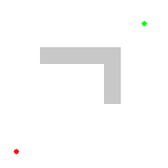

Graph Traversal
Beyond the algorithmic techniques we’ve introduced so far, there are a number of techniques that deal specifically with data stored in non-linear data structures based on graphs. Generally speaking, we can group all of these algorithms under the heading graph traversal algorithms.
A graph traversal algorithm constructs an answer to a problem by moving between nodes in a graph using the graph’s edges, thereby traversing the graph. For example, a graph traversal algorithm could be used by a mapping program to construct a route from one city to another on a map, or to determine friends in common on a social networking website.
Example - Dijkstra’s Algorithm
 ^[File:Dijkstra Animation.gif. (2018, November 24). Wikimedia Commons, the free media repository. Retrieved 01:45, February 9, 2020 from https://commons.wikimedia.org/w/index.php?title=File:Dijkstra_Animation.gif&oldid=329177321.]
^[File:Dijkstra Animation.gif. (2018, November 24). Wikimedia Commons, the free media repository. Retrieved 01:45, February 9, 2020 from https://commons.wikimedia.org/w/index.php?title=File:Dijkstra_Animation.gif&oldid=329177321.]
A great example of a graph traversal algorithm is Dijkstra’s Algorithm , which can be used to find the shortest path between two selected nodes in a graph. In the image above, we can see the process of running Dijkstra’s Algorithm on a graph that contains just a few nodes.
 ^[File:Dijkstras progress animation.gif. (2016, February 11). Wikimedia Commons, the free media repository. Retrieved 01:44, February 9, 2020 from https://commons.wikimedia.org/w/index.php?title=File:Dijkstras_progress_animation.gif&oldid=187363050.]
Of course, we can use the same approach on any open space, as seen in this animation. Starting at the lower left corner, the algorithm slowly works toward the goal node, but it eventually runs into an obstacle. So, it must find a way around the obstacle while still finding the shortest path to the goal.
Algorithms such as Dijkstra’s Algorithm, and a more refined version called the A* Algorithm are used in many different computer programs to help find a path between two points, especially in video games.